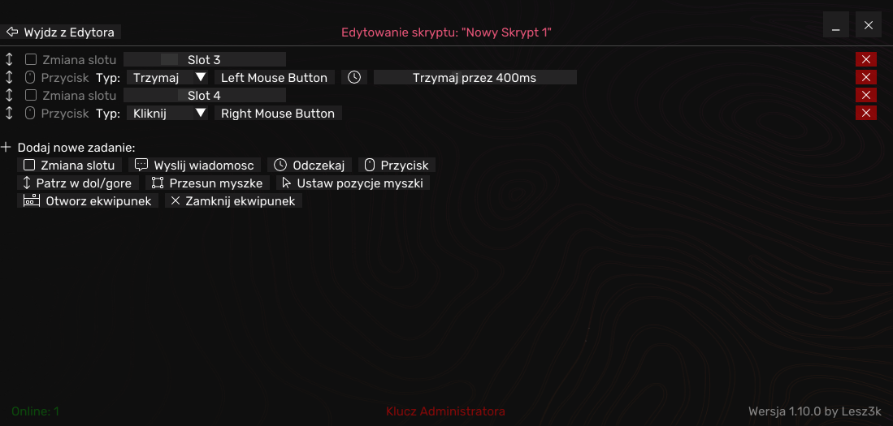

SharpMacro
SharpMacro is Script Creating & Task Automating software for Video Games with bunch of ready, cutting-edge scripts built-in written in C++ with ImGui. Being mainly subscription-based software (with free version and trial premium available) SharpMacro offers many options giving you advantage over other players.
Developed as what's considered not cheats in Minecraft Polish Community, SharpMacro aims to provide best scripts for gamers while still within the boundaries of what is allowed.
Normal View:
Advanced Options:
Normal View:
Advanced Options: